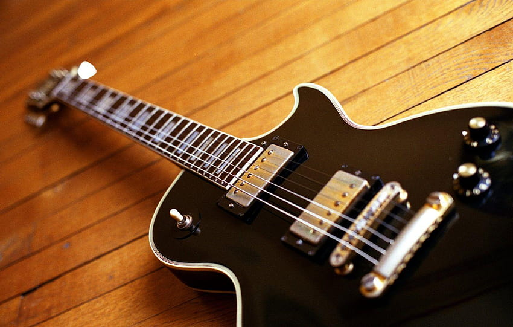

Gallery

The guitar is more than just an instrument to me; it's a way to express my emotions and creativity through music.

There's something magical about watching the sun dip below the horizon, painting the sky with hues of orange and pink.

Cape Verde holds a special place in my heart, with its stunning beaches and vibrant culture.

Fishing is not just a hobby; it's a way for me to connect with nature and find peace and serenity.
Exploring breathtaking landscapes fuels my adventurous spirit and inspires my love for the great outdoors.

Nothing beats the taste of traditional Cape Verdean dish Catxupa, filled with flavor and childhood memories.